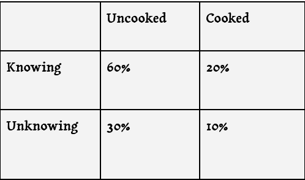

When a man consumes the flesh of another, he risks invoking the Wendigo’s curse. Some see the Wendigo as a blessing, some see a power to be harnessed, but many are lost forever; consumed is the throes of manic and cruel hunger. Their skin is like leather, with coarse grey fur along their backs and necks. Wendigos often grow bony wood-like protrusions from their bodies, which serve as natural armor. Their bodies are highly flammable, despite their use of fire-based magic. Additionally, they wield powerful Hemomancy, in the form of Blood Hexes.
Cursed:

Upon consuming the flesh of another humanoid, a humanoid creature has a chance to contract the Curse of the Wendigo. If a creature drinks a Wendigo's blood, they contract the curse instantly. When determining who has the curse, roll once for each humanoid who consumed the flesh, or until someone has contracted the curse. The likelihood of being cursed is determined by the table on the right, and is influenced by whether or not the flesh was cooked, and whether or not the creature consuming it knew it was humanoid flesh. Once a Humanoid creature has been Cursed, the curse will progress through stages until the creature is fully transformed into a Wendigo, the curse is cured, or the curse’s progress is halted. The stages and their effects are detailed below.
Stage 1:
This stage lasts for 2d4 + 2 days. The Wendigo begins to manifest itself in the host’s dreams, often appearing as a shadowy figure, or a gnawing hunger. The Cursed creature must make a DC 13 Wisdom Save every time they sleep, or perform some equivalent activity. On a failure, 1 day is subtracted from the length of this stage. During this stage, the curse may be cured via the Lesser Restoration Spell.
Stage 2:
This stage lasts for 2d4 + 2 days. The Wendigo begins to wake, and the cursed creature begins to feel a desire to hoard stones, flint, and metal scraps. Whenever the cursed creature takes a long rest it must make a DC 14 Wisdom Saving throw, or fall unconscious for 1d4+1 Hours. While unconscious, the Wendigo has control over the creature’s body, although this control is clumsy. During this stage, the curse may be cured via the Remove Curse Spell.
Stage 3:
This stage lasts for 2d4 + 2 days. All the effects of Stage 2 still apply and bony, wood-like protrusions begin to grow from the cursed creature’s body. The creature craves humanoid flesh and must make a DC 16 Wisdom saving throw every time it consumes humanoid flesh. On a failure, 1 day is subtracted from the length of this stage. The creature is, additionally, plagued by nightmares and hallucinations of the Wendigo. Whenever this creature takes a long rest, it has a 10% chance to gain a point of exhaustion at the end of its rest. During this stage, the curse may be cured via the Greater Restoration Spell.
Stage 4:
This stage lasts for 3 days. The cursed creature is permanently unconscious, and their body is under the constant control of the Wendigo. If the body dies, the creature and the Wendigo both die. For the duration of this stage, the cursed creature and the Wendigo use the Wendigo stat block in place of their own stat block. The cursed creature may, if the Wendigo is in combat, fight the Wendigo inside their mind. The Wendigo will not be able to fight back without risking the physical body, and the creature is free to attack as they wish. The creature will begin this battle tied to an object, and must first escape. If successful, the curse is dispelled, and the creature regains control of its body. During this stage, the curse may be cured via the Greater Restoration Spell. If this stage ends the creature dies, and its body is permanently transformed into that of a Wendigo, with the Wendigo becoming the new owner of the body.